CO5177 | Nhóm G1 | Dữ liệu ảnh
Nhận diện món ăn Việt Nam qua ảnh
Nguyễn Thị Thu An (2470315)
Nội dung
Nội dung trình bày
Bài toán và hướng tiếp cận
Trường hợp sử dụng, thước đo, quy trình chung, dự đoán top-k
Bộ dữ liệu
30VNFoods, cách chia, cấu trúc thư mục
Kiểm tra chất lượng dữ liệu
File lỗi, định dạng, kích thước, ảnh trùng
Khám phá dữ liệu
Số ảnh theo món, ảnh mẫu, màu sắc
Tiền xử lý và tăng cường dữ liệu
Làm sạch, thu nhỏ, chuẩn hóa, tăng cường trên train
Xây dựng mô hình
ResNet50 trích đặc trưng, fine-tune nhẹ, baseline thủ công
Đánh giá và phân tích lỗi
Kết quả trên test, các cặp món bị nhầm, lỗi của nhãn
Kết luận
Kết quả chính, hạn chế, hướng mở rộng
01 | Bài toán và hướng tiếp cận
Bài toán: nhận diện món ăn từ ảnh chụp
Người dùng chụp
ảnh món ăn
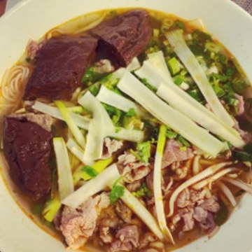
Ảnh thật
Mô hình
phân loại ảnh
30 món
Kết quả
Bún bò Huế
hoặc 3 gợi ý
Ứng dụng ẩm thực hoặc du lịch: đầu vào là một ảnh, đầu ra là tên món trong 30 món ăn Việt Nam phổ biến. Mỗi ảnh có một nhãn. Đây là bài toán phân loại ảnh có giám sát.
Accuracy
Tỉ lệ ảnh có món dự đoán đầu tiên đúng.
Macro-F1
Trung bình F1 của 30 món, mỗi món trọng số như nhau. Dùng để chọn mô hình.
Top-3 / Top-5
Tỉ lệ ảnh có món đúng nằm trong 3 hoặc 5 gợi ý đầu tiên.
01 | Bài toán và hướng tiếp cận
Hướng tiếp cận chung
Dữ liệu có nhãn
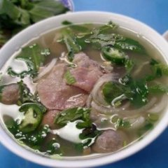
Pho
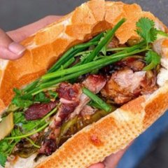
Banh mi
ảnh + nhãn
train / val / test
Huấn luyện
Ảnh thành vector đặc trưng, rồi bộ phân loại học trên train
Chọn mô hình
Mô hình có macro-F1 cao nhất trên val
Dự đoán, đánh giá
Xác suất cho 30 món, xếp hạng top-k; đánh giá một lần trên test
- Đặc trưng: so sánh đặc trưng thiết kế bằng tay (màu sắc, điểm nổi bật) với đặc trưng của một mạng CNN đã huấn luyện sẵn trên ImageNet.
- Bộ phân loại: giống nhau ở mọi mô hình (tuyến tính + softmax), để khác biệt chỉ đến từ đặc trưng.
- Tập test chỉ được dùng sau khi đã chọn xong mô hình, để điểm số phản ánh đúng ảnh chưa từng thấy.
01 | Bài toán và hướng tiếp cận
Dự đoán: xác suất và top-k
Với mỗi ảnh, mô hình trả về một xác suất cho từng món trong 30 món (tổng bằng 1). Món có xác suất cao nhất là dự đoán (top-1); k món cao nhất là danh sách gợi ý (top-k).
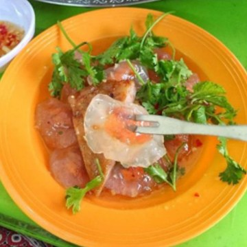
Nhãn thật: Banh bot loc
Top-1 đúng, top-3 đúng.
Nhãn thật: Bun bo Hue
Top-1 sai, top-3 đúng.
Hai ảnh test và xác suất thật của mô hình cuối cùng. Ứng dụng có thể hiện một câu trả lời khi xác suất cao, và cả 3 gợi ý khi mô hình chưa chắc chắn, nên ngoài accuracy nhóm báo cáo thêm top-3 và top-5 accuracy.
02 | Bộ dữ liệu
Bộ dữ liệu 30VNFoods
- Nguồn: Do et al., COMNETSAT 2021; bản sao công khai trên Hugging Face
vuongnhathien/30VNFoods. - Giấy phép: CC BY-NC-SA 4.0, phi thương mại, phải ghi nguồn.
- Nội dung: ảnh chụp 30 món ăn Việt Nam thu thập từ Internet; nhãn là tên món.
- Kích thước ảnh: cạnh ngắn từ 83 đến 4 912 px, trung vị 700 px; chỉ 9 ảnh dưới 128 px.
- Kết quả gốc: accuracy 77.54%, top-5 96.07% trên tập test.
| Tập | Ban đầu | Tỉ lệ | Sau làm sạch | Mỗi món |
|---|---|---|---|---|
| train | 17 581 | 69.9% | 17 215 | 306 - 1 047 |
| val | 2 515 | 10.0% | 2 515 | 45 - 153 |
| test | 5 040 | 20.1% | 5 040 | 89 - 306 |
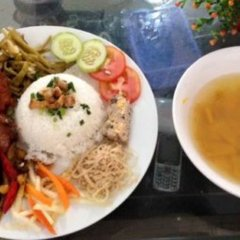
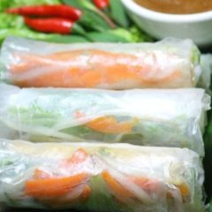
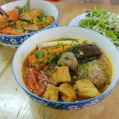
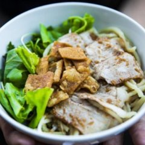
Ảnh train và nhãn của chúng (tên thư mục, viết không dấu). Nhóm giữ nguyên cách chia của tác giả để so sánh được với bài báo gốc.
02 | Bộ dữ liệu
Cấu trúc thư mục dữ liệu
data/
train/
Banh beo/ 1.jpg 10.jpg ...
Banh bot loc/
... (30 thu muc)
val/ (cung cau truc)
test/ (cung cau truc)
labels.csv
- Cấu trúc phân loại ảnh của Ultralytics YOLO: một thư mục cho mỗi tập, một thư mục con cho mỗi món.
- Mỗi ảnh chỉ có một nhãn, nên nhãn được lưu bằng tên thư mục chứa ảnh, không cần file nhãn riêng.
labels.csvliệt kê 25 136 ảnh với tập và nhãn, dùng cho kiểm tra chất lượng và phân tích.
| path | split | label |
|---|---|---|
train/Banh beo/1.jpg | train | Banh beo |
val/Banh beo/103.jpg | val | Banh beo |
test/Banh beo/109.jpg | test | Banh beo |
03 | Kiểm tra chất lượng dữ liệu
File lỗi, định dạng, chế độ màu và kích thước ảnh
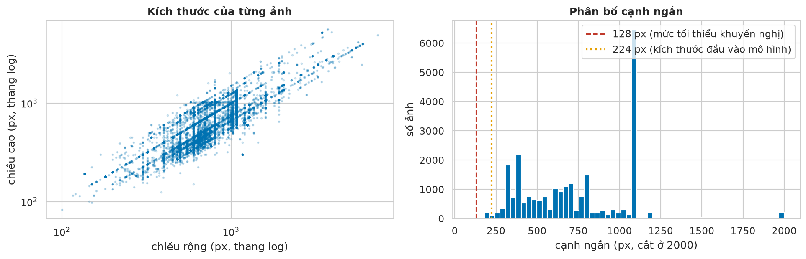
| Kiểm tra | Kết quả | Cách xử lý |
|---|---|---|
| File lỗi | 0 file | nếu có thì bỏ khỏi train/val/test |
| Định dạng khác JPEG | 129 file (PNG, MPO, BMP) có đuôi .jpg | giữ lại, thư viện đọc ảnh theo nội dung file |
| Chế độ màu khác RGB | 0 ảnh | vẫn đổi sang RGB, cần cho ảnh mới |
| Cạnh ngắn dưới 128 px | 9 ảnh (0.04%), 5 ở train | bỏ khỏi train; giữ ở val/test và phóng to |
03 | Kiểm tra chất lượng dữ liệu
Phát hiện ảnh trùng bằng pHash
- pHash: mã 64 bit mô tả cấu trúc tổng thể của ảnh; hai bản của cùng một ảnh (nén lại, thu nhỏ, cắt nhẹ) có mã giống hoặc gần giống nhau.
- So sánh toàn bộ 315 896 680 cặp ảnh; hai ảnh trùng nếu mã khác nhau không quá 6 bit.
- Kết quả: 403 cặp (239 trùng hoàn toàn, 164 gần trùng), liên quan đến 757 ảnh (3.0%).
| Loại trùng | Số cặp | Cách xử lý |
|---|---|---|
| Giữa train và val/test | 186 | bỏ khỏi train |
| Mang nhãn khác nhau | 65 | bỏ khỏi train; đánh dấu ở val/test |
| Cùng nhãn trong train | 153 | giữ một bản cho mỗi nhóm |
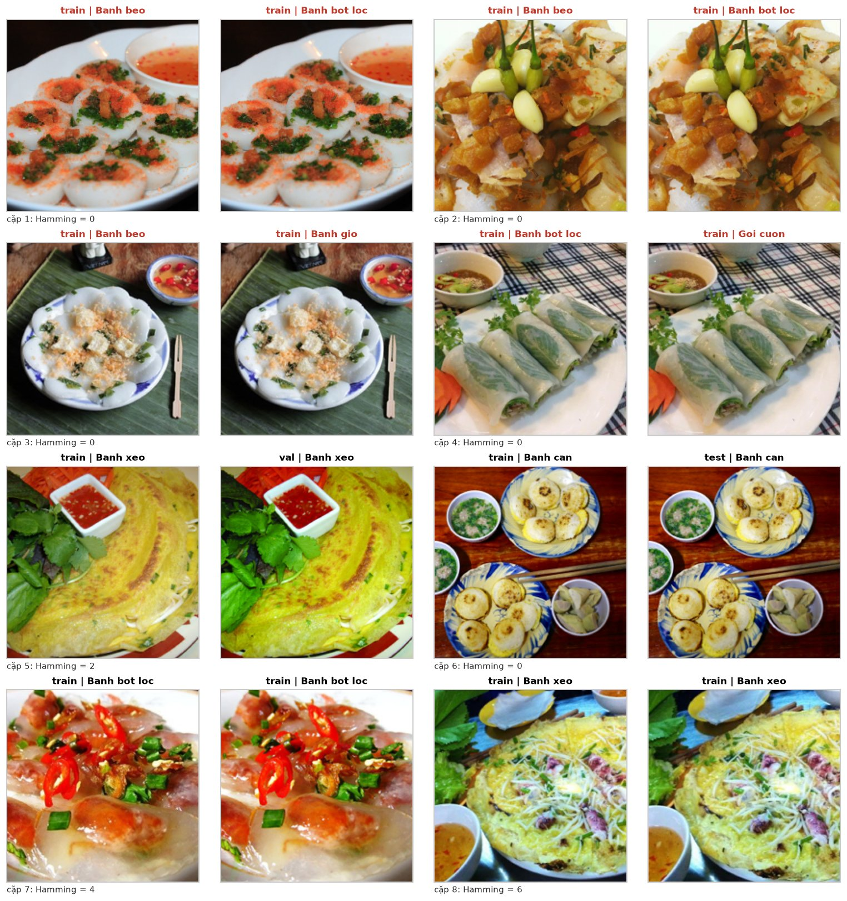
04 | Khám phá dữ liệu
Số ảnh theo món và theo tập
- Bún bò Huế có nhiều ảnh train nhất (1 071), bánh pía ít nhất (310): chênh 3.5 lần.
- Ba tập giữ cùng tỉ lệ giữa các món.
Nhận xétMất cân bằng ở mức vừa phải: giữ mọi món, không lấy mẫu lại, nhưng chọn mô hình theo macro-F1 để mọi món có trọng số như nhau.
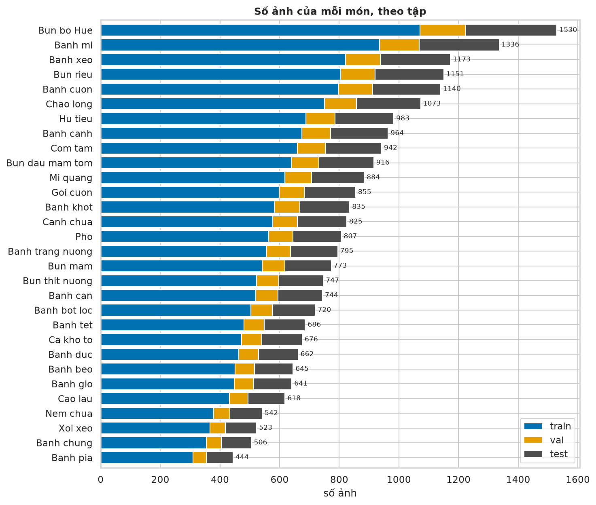
04 | Khám phá dữ liệu
Ảnh mẫu của từng món
- Bốn ảnh train ngẫu nhiên của mỗi món.
- Ảnh chụp từ nhiều góc, nhiều kiểu bày đĩa và điều kiện ánh sáng khác nhau.
Nhận xétNhiều món rất giống nhau: các món nước (phở, bún bò Huế, hủ tiếu, bún riêu, bánh canh) và các loại bánh làm từ bột gạo (bánh bèo, bánh đúc, bánh bột lọc).
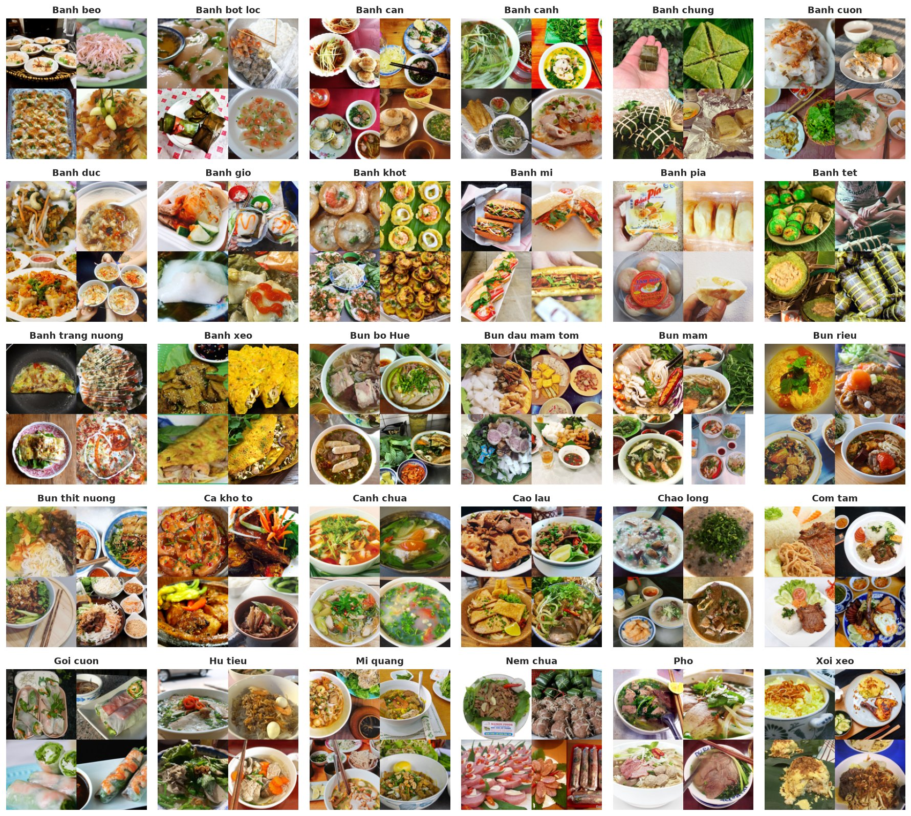
04 | Khám phá dữ liệu
Độ bão hòa và độ sáng theo món
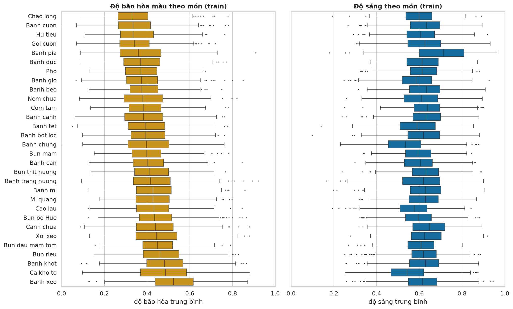
Nhận xétTrung vị độ bão hòa của các món chỉ trải từ 0.33 (cháo lòng) đến 0.52 (bánh xèo), trong khi khoảng tứ phân vị bên trong một món trung bình đã rộng 0.16: màu sắc tổng thể khó đủ để phân biệt 30 món.
05 | Tiền xử lý và tăng cường dữ liệu
Các bước tiền xử lý
- Bước 1
Làm sạch train
Bỏ 5 ảnh nhỏ, 182 ảnh trùng với val/test, 35 ảnh trùng mang nhãn khác, 144 ảnh lặp: còn 17 215 ảnh. - Bước 2
Mã hóa nhãn
LabelEncoder: 30 tên món thành số nguyên 0-29. - Bước 3
Thư mục processed
Thu nhỏ cạnh ngắn về 256 px, lưu vàodata/processed/cùng cấu trúc; ảnh gốc giữ nguyên. - Bước 4
Đưa vào mạng
Cạnh ngắn 256 px, cắt giữa 224 x 224, chuẩn hóa theo trung bình và độ lệch chuẩn của ImageNet. - Bước 5
Chuẩn hóa đặc trưng
L2 cho vector ResNet50;StandardScalercho đặc trưng thủ công.
- ResNet50 nhận ảnh 224 x 224 trong khi ảnh gốc có cạnh ngắn trung vị 700 px; giải mã ảnh JPEG lớn ở mọi epoch rất chậm, nên ảnh chỉ được thu nhỏ một lần và dùng chung cho mọi mô hình.
- Val và test không bị bỏ ảnh nào; ảnh test có bản trùng được đánh dấu để phân tích lỗi.
05 | Tiền xử lý và tăng cường dữ liệu
Tăng cường dữ liệu
| Phép biến đổi | Tham số | Mục tiêu |
|---|---|---|
| Cắt khung ngẫu nhiên | 224 x 224, giữ 70-100% diện tích | mô phỏng khung hình và khoảng cách chụp khác nhau |
| Lật ngang | xác suất 0.5 | ảnh lật ngang vẫn là cùng một món |
| Đổi màu nhẹ | sáng, tương phản 20%; bão hòa 10%; sắc màu 0.02 | mô phỏng ánh sáng khác nhau; sắc màu chỉ đổi rất ít vì màu là đặc điểm của món |
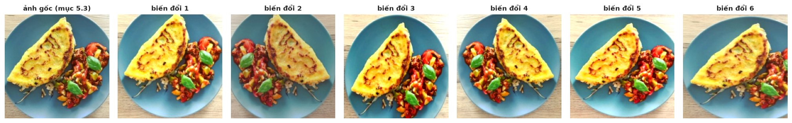
- Chỉ áp dụng cho train và chỉ khi fine-tune: mỗi ảnh được biến đổi ngẫu nhiên ở mỗi epoch, để mạng học đặc điểm của món thay vì học thuộc từng ảnh.
- Không lật dọc hay xoay mạnh vì ảnh món ăn thật hiếm khi như vậy. Val và test luôn dùng phép biến đổi cố định.
06 | Xây dựng mô hình
Ba mô hình được so sánh
| Mô hình | Đặc trưng | Phần được huấn luyện | Đầu phân loại |
|---|---|---|---|
| ResNet50 trích đặc trưng | vector 2 048 chiều, ResNet50 giữ nguyên | đầu phân loại | Logistic Regression |
| ResNet50 fine-tune nhẹ | ResNet50, khối cuối layer4 học lại | layer4 và đầu phân loại | tuyến tính 2048 x 30 + softmax |
| Baseline thủ công | histogram màu + SIFT (OpenCV) | đầu phân loại | Logistic Regression |
ResNet50 (ImageNet, torchvision)
Nhận ảnh 224 x 224, trả về vector 2 048 chiều. Logistic Regression nhiều lớp là một lớp tuyến tính + softmax, đúng bằng lớp cuối của ResNet50.
Baseline thủ công (ảnh 128 x 128)
Histogram màu HSV 8 x 8 x 8 (512 chiều) + túi từ thị giác SIFT: MiniBatchKMeans gom vector SIFT của 2 000 ảnh train thành 256 cụm (256 chiều).
06 | Xây dựng mô hình
Fine-tune nhẹ ResNet50
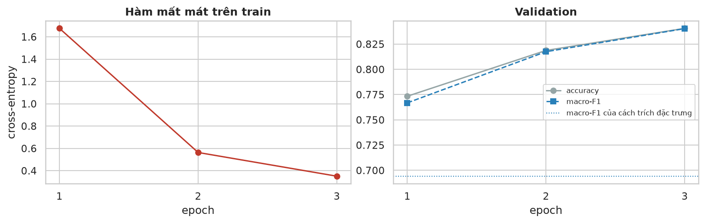
- Đóng băng mọi lớp trừ
layer4và lớp tuyến tính 30 lớp mới: 15.0 triệu trên 23.6 triệu tham số được huấn luyện. - Adam, learning rate 0.0001 để không phá vỡ trọng số đã học, batch 64, 3 epoch, có tăng cường dữ liệu.
- Macro-F1 val: 0.767, 0.817, 0.840; giữ epoch tốt nhất. Đường chấm là cách trích đặc trưng (0.694).
- Ngay sau epoch đầu, mô hình đã vượt cách trích đặc trưng; val vẫn đang tăng ở epoch 3.
07 | Đánh giá và phân tích lỗi
So sánh ba mô hình trên tập test
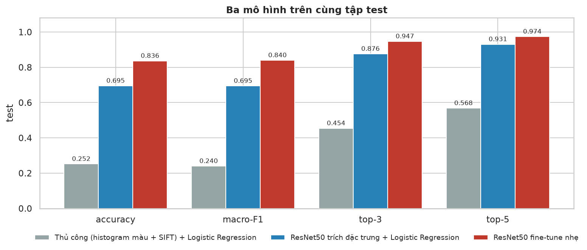
Baseline thủ công
0.240 macro-F1
ResNet50 trích đặc trưng
0.695 +45.5 điểm
ResNet50 fine-tune nhẹ
0.840 +14.5 điểm
07 | Đánh giá và phân tích lỗi
Kết quả trên tập test và so sánh với bài báo gốc
| Mô hình | Đặc trưng | Accuracy | Macro-F1 | Top-3 | Top-5 |
|---|---|---|---|---|---|
| Baseline thủ công | histogram màu + SIFT | 0.2522 | 0.2400 | 0.4544 | 0.5683 |
| ResNet50 trích đặc trưng | ResNet50 giữ nguyên | 0.6952 | 0.6945 | 0.8762 | 0.9306 |
| ResNet50 fine-tune nhẹ | layer4 học lại | 0.8363 | 0.8397 | 0.9470 | 0.9738 |
| Bài báo gốc | 0.7754 | 0.9607 |
- Tập test 5 040 ảnh, dùng một lần. Thứ tự ba mô hình giống trên val.
- Macro-F1 test gần như bằng val (0.8397 so với 0.8403).
- Mô hình cuối cùng cao hơn bài báo gốc ở accuracy (0.8363 so với 0.7754) và top-5 (0.9738 so với 0.9607).
07 | Đánh giá và phân tích lỗi
F1 theo từng món
- F1 trải từ 0.63 (bánh canh) đến 0.97 (bánh mì).
- Ba món khó nhất: bánh canh, bánh đúc, hủ tiếu.
Nhận xétCác món khó đều thuộc nhóm món nước hoặc bánh làm từ bột gạo. Hệ số Spearman giữa số ảnh train và F1 là -0.08 (p = 0.669): món khó là món giống một món khác, không phải món ít ảnh.
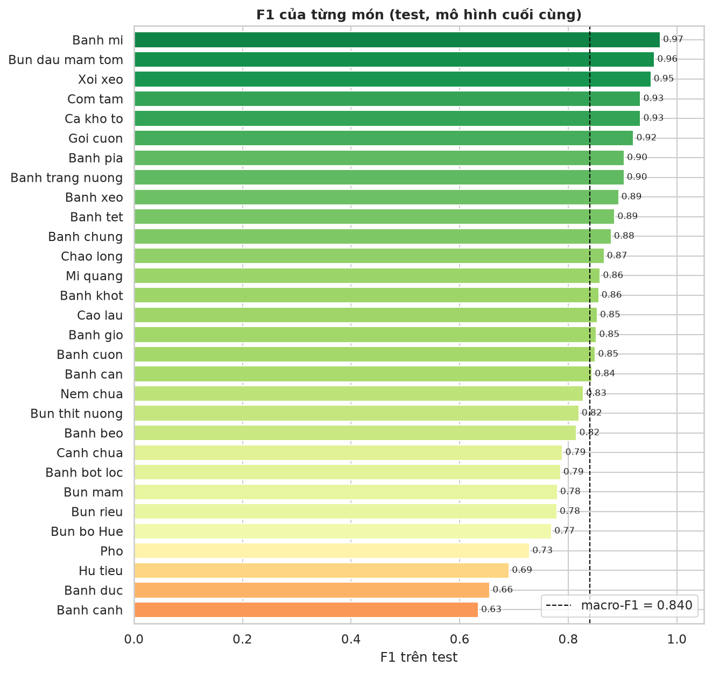
07 | Đánh giá và phân tích lỗi
Ma trận nhầm lẫn
- Chuẩn hóa theo hàng: mỗi hàng là một món thực tế.
- Số màu đỏ là các ô ngoài đường chéo từ 5% trở lên.
Nhận xétChỉ 15 trên 870 ô ngoài đường chéo đạt từ 5% trở lên: lỗi tập trung vào một số ít cặp món.
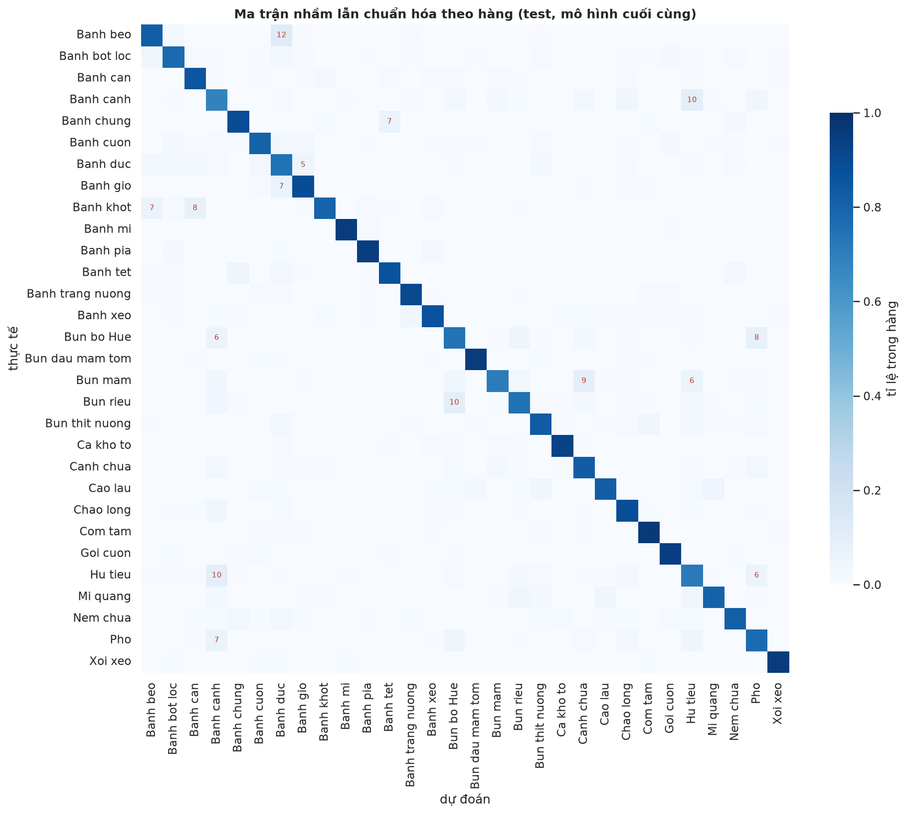
07 | Đánh giá và phân tích lỗi
Các cặp món bị nhầm nhiều nhất
| Món thực tế | Bị đoán thành | Tỉ lệ | Ngược lại |
|---|---|---|---|
| Bánh bèo | Bánh đúc | 12.4% | 3.0% |
| Bún riêu | Bún bò Huế | 10.4% | 4.6% |
| Bánh canh | Hủ tiếu | 10.4% | 10.2% |
| Hủ tiếu | Bánh canh | 10.2% | 10.4% |
| Bún mắm | Canh chua | 9.0% | 2.4% |
Nhận xétNăm cặp chiếm 94 trên 825 lỗi. Mọi cặp đều là hai món cùng nhóm, đúng với những nhóm món giống nhau đã thấy khi khám phá dữ liệu; bánh canh và hủ tiếu bị nhầm theo cả hai chiều.
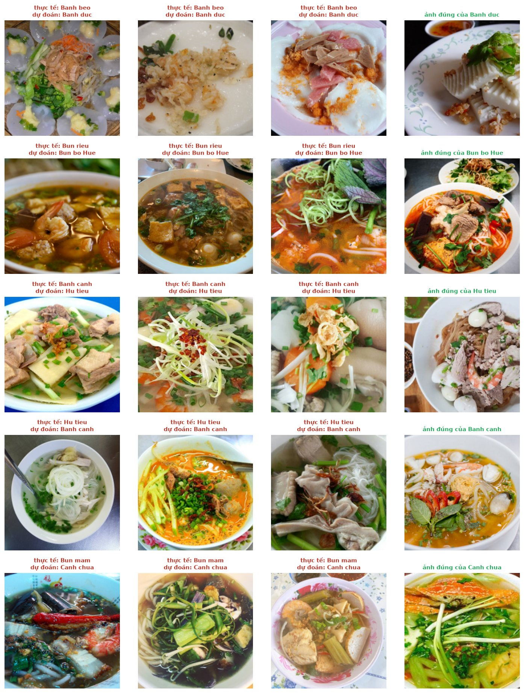
07 | Đánh giá và phân tích lỗi
Tỉ lệ đoán sai theo nhóm ảnh
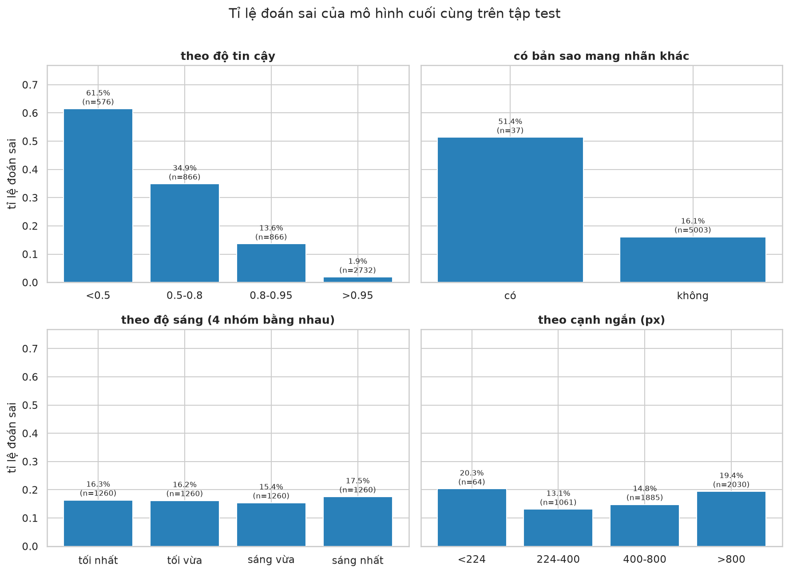
- Độ tin cậy: 576 ảnh dưới 0.5 sai 61.5%; 2 732 ảnh trên 0.95 (hơn nửa tập test) sai 1.9%.
- Nhãn mâu thuẫn: 37 ảnh test có bản sao mang nhãn khác sai 51.4%, so với 16.1%.
- Độ sáng, kích thước: gần như không ảnh hưởng (15.4% đến 17.5% giữa bốn nhóm độ sáng).
Nhận xétĐộ tin cậy của mô hình là dấu hiệu rõ nhất để biết khi nào dự đoán có thể sai.
07 | Đánh giá và phân tích lỗi
Các lỗi có độ tin cậy cao nhất
16 ảnh test bị đoán sai với độ tin cậy từ 0.99 trở lên. Ít nhất 9 ảnh khớp với món được dự đoán hơn là nhãn gốc:
| Nhãn gốc | Ảnh thực tế là |
|---|---|
| Bánh cuốn, Nem chua | gỏi cuốn |
| Canh chua | cá kho tộ |
| Bún bò Huế | phở |
| Bún riêu | bún bò Huế |
| Bánh đúc | bánh giò |
| Bánh bột lọc | bánh bèo |
| Bánh khọt | bánh căn |
| Bánh tráng nướng | bánh cuốn |
Nhận xétPhần lớn lỗi tự tin là lỗi của nhãn trong dữ liệu. Chỉ 3 trong 16 ảnh có bản sao mang nhãn khác, nên pHash không tìm được các nhãn sai này. Nhóm không sửa nhãn để giữ nguyên tập test chính thức.
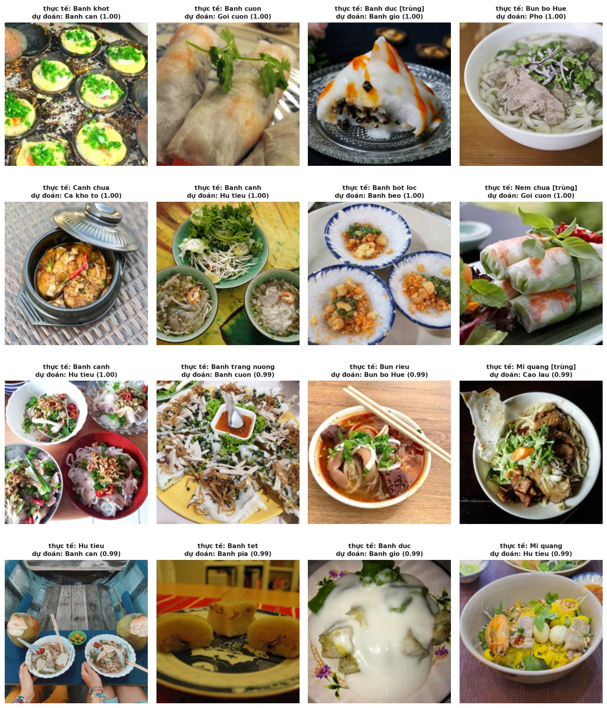
07 | Đánh giá và phân tích lỗi
Dự đoán ảnh mới
predict_image()chạy cùng quy trình như khi đánh giá: đọc ảnh, đổi sang RGB, đổi kích thước, cắt giữa, chuẩn hóa, rồi mô hình cuối cùng.- Sáu ảnh test đọc từ file gốc: món đúng nằm trong ba gợi ý ở 5 trên 6 ảnh.
- Khi xác suất của gợi ý đầu dưới 0.5 (nhóm sai 61.5%), ứng dụng nên hiện cả 3 gợi ý thay vì một câu trả lời.
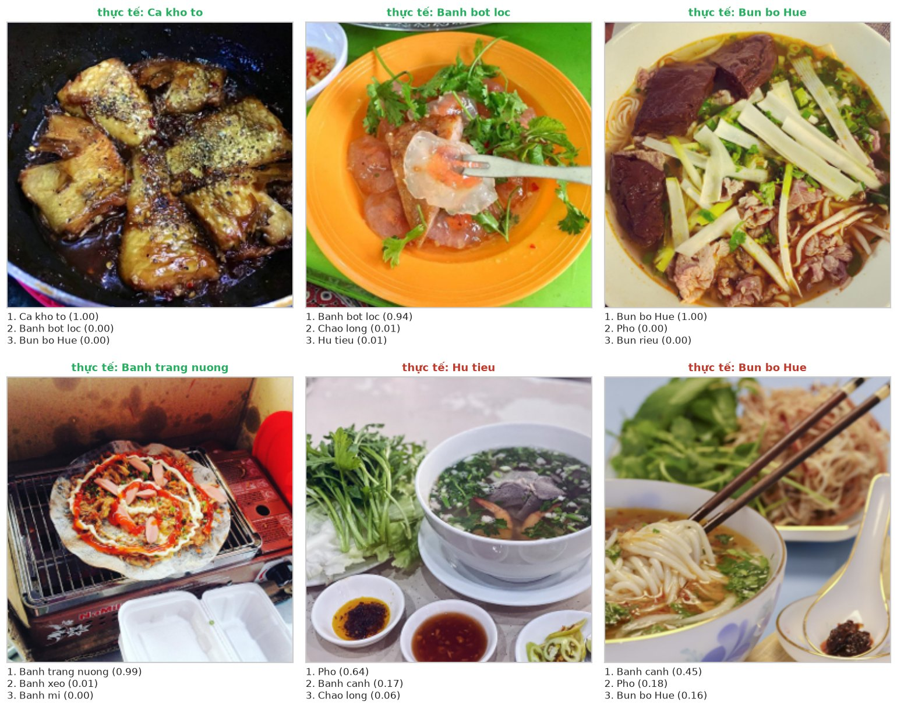
08 | Kết luận
Kết luận, hạn chế và hướng mở rộng
Kết quả
- ResNet50 fine-tune nhẹ: accuracy 0.8363, macro-F1 0.8397, top-3 0.9470; cao hơn bài báo gốc (accuracy 0.7754).
- Cùng đầu phân loại: đặc trưng ImageNet tăng macro-F1 từ 0.2400 lên 0.6945; fine-tune nhẹ thêm 14.5 điểm.
- Lỗi tập trung ở các cặp món cùng nhóm và ở ảnh bị gán nhãn sai.
Hướng mở rộng
- Fine-tune lâu hơn hoặc mở thêm
layer3; thử MobileNetV3 hoặc ViT-B/16. - Kiểm tra lại nhãn của các lỗi tự tin và ảnh có bản sao mang nhãn khác.
- Tìm ảnh gần trùng bằng độ tương đồng của đặc trưng CNN.
Hạn chế
- Mỗi ảnh một nhãn, dù một số ảnh có nhiều món.
- Nhãn sai vẫn còn trong val và test, nên điểm test có thể thấp hơn chất lượng thật.
- pHash không tìm được hai ảnh khác nhau chụp cùng một đĩa.
- Logistic Regression dùng tham số mặc định; fine-tune chỉ 3 epoch; chỉ thử một mạng pretrained.
- Ảnh từ Internet thường chụp đẹp, khác ảnh chụp bằng điện thoại trong quán.